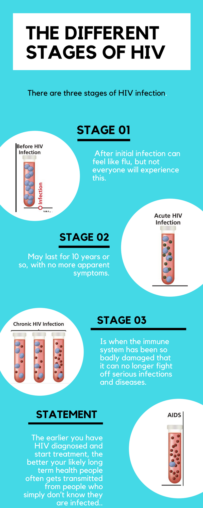

The problem with our disease is the fact that its has a high population rate in the Metro Atlanata area. HIV stands for human immunodeficiency virus. It harms your immune system by destroying the white blood cells that fight infection. This puts you at risk for serious infections and certain cancers. AIDS stands for acquired immunodeficiency syndrome. It is the final stage of infection with HIV. Not everyone with HIV develops AIDS. HIV most often spreads through unprotected sex with an infected person. It may also spread by sharing drug needles or through contact with the blood of an infected person. Women can give it to their babies during pregnancy or childbirth. Me and my team are working to spread awareness so that people know what the disease is and how to decrease the rate of them getting it or how to treat the disease if already infected.
My teammates and I are working on spreading awarenees to our community and to the world. We feel like if the world knew more about the disease that they can prevent the disease from spreading. I myself feel like if we spread awareness and people stop passing on and spreading the disease that we can get rid of it in 1 or 2 decades . We are think of something like a food truck , we are going to go around passing out food to people in need and posting up flyiers . So not only are we spread awereness to try to eliminate the disease . We are also feeding the people i need . Even though there is not a cure however, there’s good news: by using HIV medicines (called antiretroviral therapy or ART) consistently, you can prevent HIV from progressing to AIDS. ART helps control the virus so that you can live a longer, healthier life and greatly reduces the risk of transmitting HIV to others.